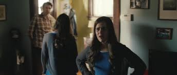
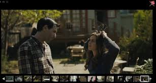

Modern Storytelling Technologies
Nosedive - Introduction
‘Nosedive,’ directed by Joe Wright, depicts a society where a rating system controls social status, self-worth, and access to services. This system impacts people’s everyday life and interactions.
The Rating System
In ‘Nosedive,’ every interaction is rated via mobile devices, impacting individuals’ lives significantly.
Impact on Society
Wright’s portrayal shows how technology-driven validation leads to superficiality and stress.

Visual Storytelling
Through augmented reality interfaces and a pastel colour palette, Wright emphasises the artificial nature of the characters’ lives.
Themes and Messages
‘Nosedive’ critiques our reliance on social media for validation, urging viewers to reflect on their digital interactions.

Possibilia - Introduction
‘Possibilia,’ directed by Daniels, is an interactive film that explores multiple parallel universes through modern communication technologies.
Interactive Storytelling
The film allows viewers to influence the narrative by making choices, transforming them into active participants.
Multiverse Concept
‘Possibilia’ presents a couple’s breakup across parallel universes, illustrating the infinite outcomes of a single decision.

User Interface Design
Daniels use a user-friendly interface to switch between storylines effortlessly, ensuring technology enhances the narrative.

Themes and Exploration
The film delves into themes of choice and consequence, with the interactive format allowing viewers to experience the emotional weight of decisions.
Visual and Technical Mastery
Utilizing split screens and visual effects, Daniels maintain coherence across multiple storylines, showcasing their technical expertise.

Audience Engagement
By integrating modern technologies, ‘Possibilia’ engages viewers in a participatory experience, prompting reflection on personal choices and possibilities.
Conclusion
Both ‘Nosedive’ and ‘Possibilia’ demonstrate the profound impact of modern communication technologies on storytelling.
Final Thoughts
As we explore the intersection of technology and storytelling, these works remind us of the power of narrative to reflect and shape our understanding of reality in a digital world.